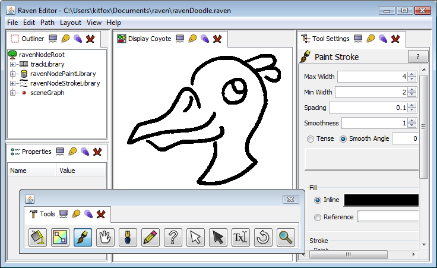
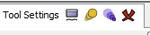

Setting up your workspace
Docking
Raven uses the Raven Docking Manager to arrange windows in the main window area. You can resize windows by dragging the thin separator bars between them. You can rearrange them in space by clicking on their tab and dragging it to a new open space.

You can float, maximize, minimize and close windows respectively by clicking on the buttons to the right of the title in their tab:

Opening Views
You interact with your projects through a set of windows called Views. Each View presents a different aspect of the project. Some views simply display useful information while others allow you to manipulate your project's data.
All view windows can be opened from the View menu in the main menu. The Outliner, Display and Tool windows can be found here, along with all the other views Raven is capable of using.
Saving Layouts
You will often want to have very different layouts to accomplish different tasks. Eg, when you're animating, you will usually want to have the Player visible - however, you likely won't want it visible at all if you're drawing images. The Layout Manager makes switching between multiple layouts easier.
Once you have a layout that you want to preserve, select Layout/Save Layout... from the main menu. Enter a name for your new layout and press OK. The current layout will be saved under this name. If you ever change the layout and want to restore this saved state, just select Layout/Layouts/<name of saved layout> and your old layout settings will be restored.
Persistence
Whenever you exit Raven, layout information will be saved in your raven preferences file in your home directory. You can find this file at <user home>/.raven/preferences.xml. Raven will read this file at startup to restore your layout and other preferences. If it is not found, a new default preferences will be created.